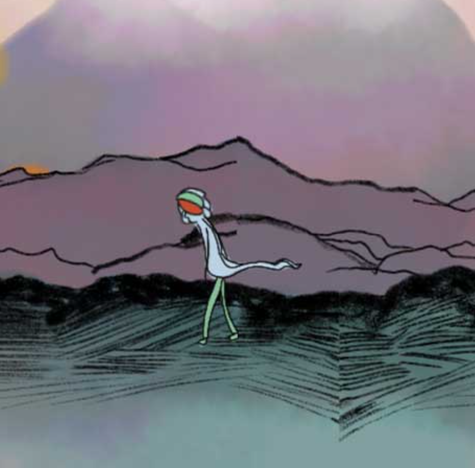

The Runner Game - play here!
This is a game I made for my AP Computer Science: Principles class back in my senior year of high school. We were getting introduced to the P5JS library and I wanted to see how far I could take it.
This is a game I made for my AP Computer Science: Principles class back in my senior year of high school. We were getting introduced to the P5JS library and I wanted to see how far I could take it.